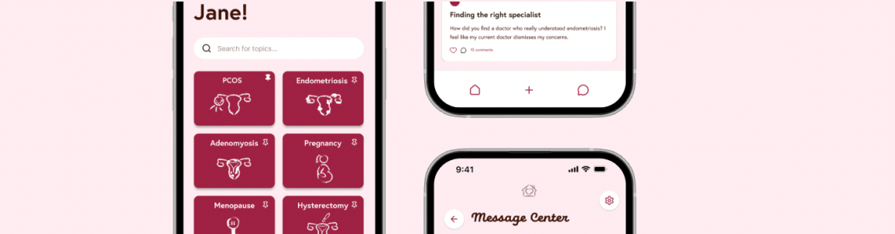
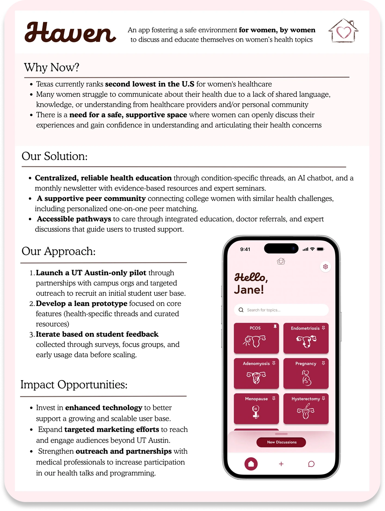
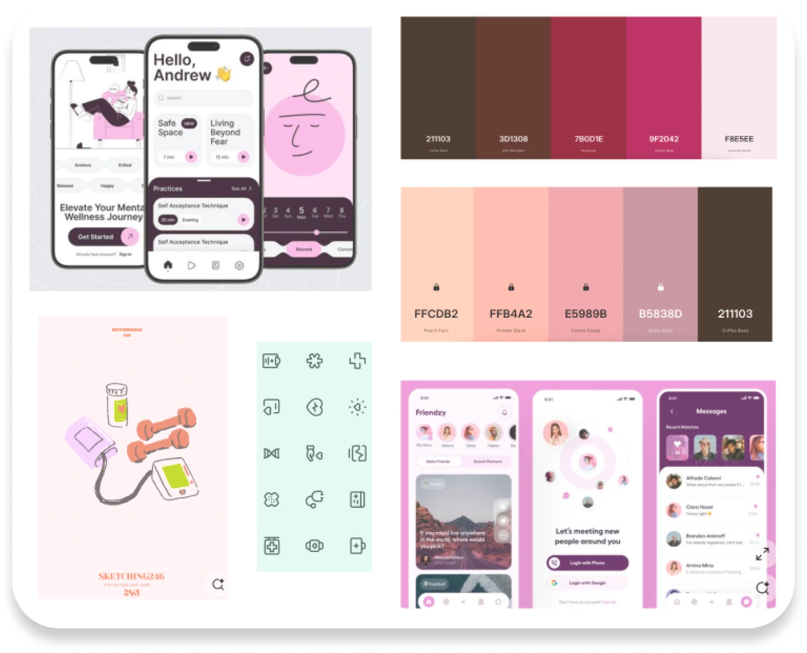
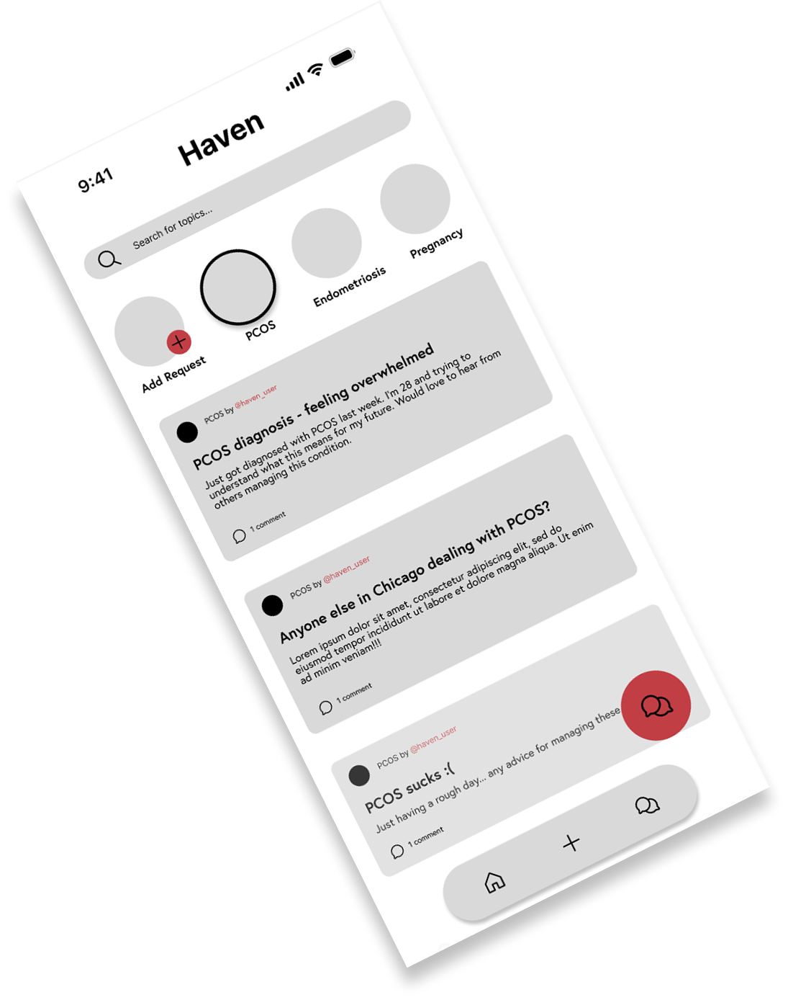
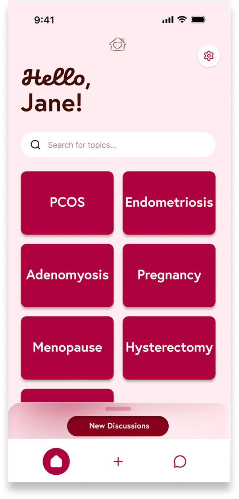
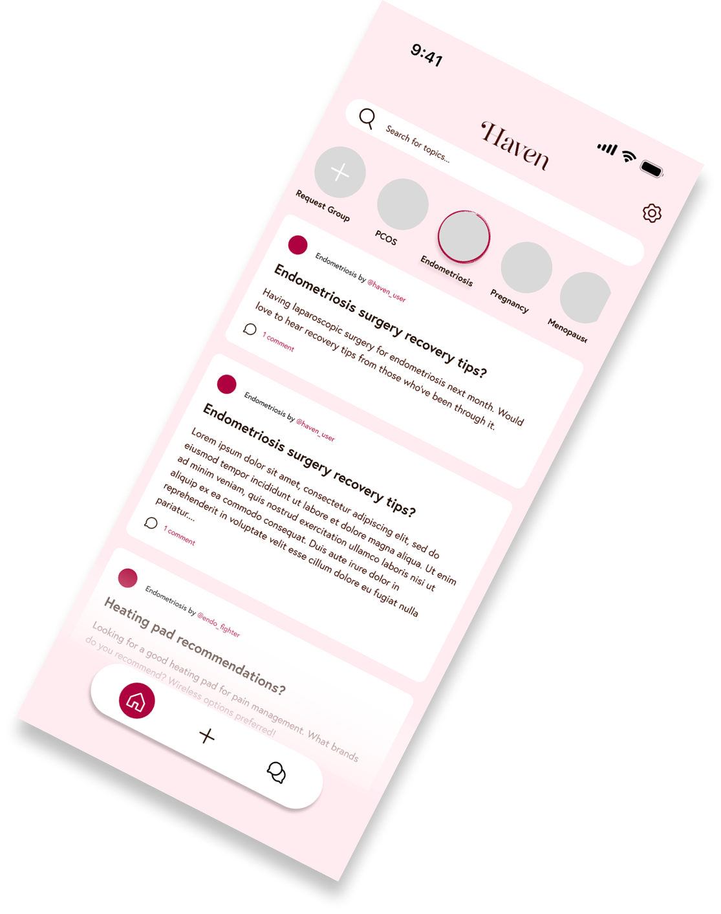
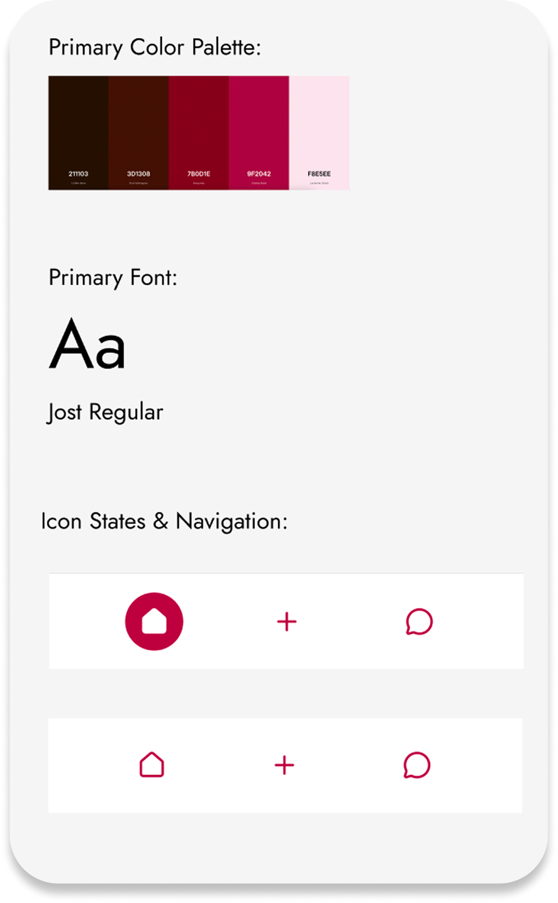

Haven
Creating a safe space for women's health support in a two-week sprint
The Challenge
How might we design a community platform where women feel safe enough to share their most personal health experiences, while still making it feel warm and personal — rather than like an anonymous forum?
What is Haven?
As the name suggests, Haven is a platform where women feel safe, supported, and confident sharing personal experiences and asking questions. To design for an app surrounding a sensitive yet important topic like women's health, I looked at both fitness-based apps for organization and menstrual/pregnancy tracking apps for design choices.

Moodboarding
After identifying that Haven should invoke feelings of trust, support, safety, and sisterhood among our users, I began researching UI from three different categories of apps: social support, fitness, and women's health (menstrual/pregnancy trackers).
In terms of visual design, I was inspired by soft colors, rounded elements, and personalized illustrative icons — together creating a sense of familiarity and femininity. As for flow and functionality, I wanted Haven to feel like social forums such as Reddit, while keeping a more personalized, tight-knit sisterhood feel, taking inspiration from apps like Flo.

Sketches & Early Iterations
Using low-fidelity sketches as a starting point, I used Figma to bring the ideas to life through a mid-fi prototype, incorporating a basic color scheme inspired by the moodboarding done earlier. After a few iterations of fonts, icons, and logos, I settled on a combination that conveyed the illustrative, playful, yet simple feel I wanted to inject into the app.



Style Guide
To maintain consistency and visual flow across each screen, I created a style guide identifying key fonts, colors, and shapes used across multiple pages.
The primary color scheme includes shades of pink and maroon, inviting users in through their femininity while feeling safe and comfortable with colors such as pink. Pink is often a color women feel they have to reject to feel "unique" or "grown up" — Haven helps reclaim it as a symbol of sisterhood and comfort.

Final Design
This redesign includes four main screens that users can navigate to.
Upon opening, users are greeted by a beating heart inside a home, representing the safe "Haven" the app provides. On the home page, users see their pinned discussion selections, as well as a "new discussions" pull-up tab showing important missed posts or recommended updates. From there, they can navigate an array of women's health discussion topics, add their own posts, and interact with others or submit a new group.
Soft, rounded features provide a safe and reliable feel to the app. Hand-drawn symbols (created in Adobe Illustrator) show a touch of personality and care from the Haven design team — yours truly.
Envisioning Future Improvements
With more time working on Haven, I plan to add AI features to help guide women to the right groups, people, and resources based on user-provided data. As with any AI integration, this would need careful attention to data security and user consent.